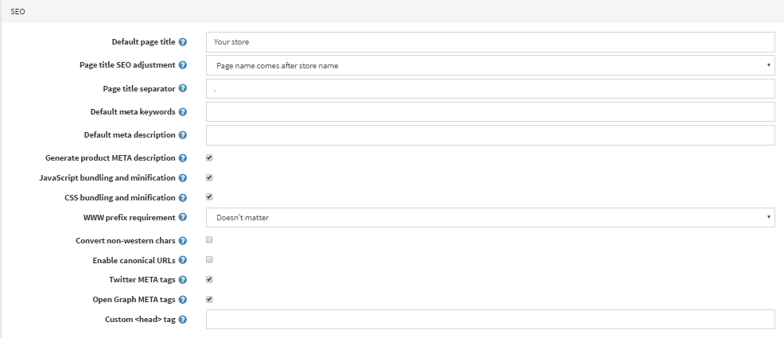
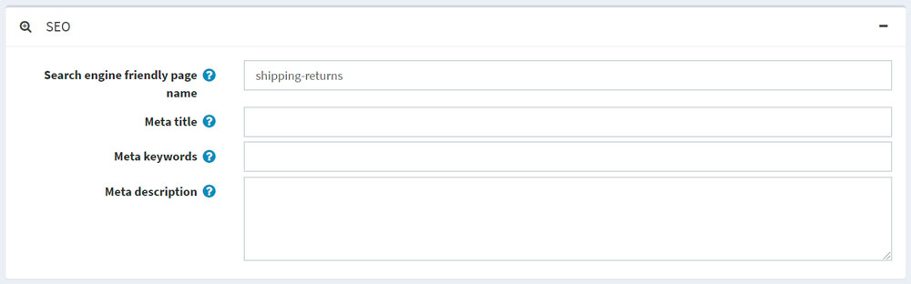
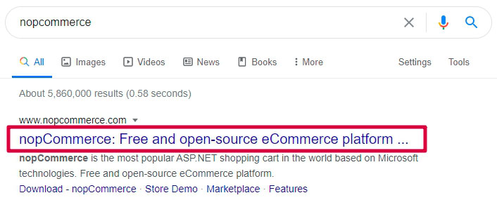
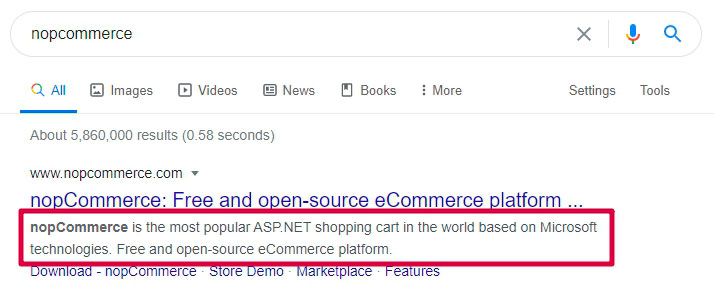
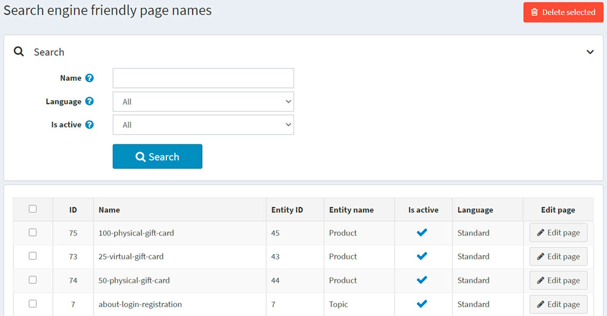

搜尋引擎最佳化
SEO 代表搜尋引擎最佳化（Search engine optimization）；這是從搜尋引擎的「免費」、「自然」、「編輯」或「原生」搜尋結果中獲取流量的過程。所有主要的搜尋引擎都有主要的搜尋結果，其中網頁和其他內容（例如影片或在地商家資訊）會根據搜尋引擎認為與使用者最相關的內容進行顯示與排名。
nopCommerce 支援商店中各類型頁面的 SEO 技術。您可以在 參閱 章節中找到這些技術的清單。
SEO 設定
nopCommerce 提供了一些通用的 SEO 設定，可套用到整間商店。
若要編輯 SEO 設定，請前往 設定 → 設定 → 一般設定，然後切換到 SEO 面板：

在 預設頁面標題 欄位中，輸入您商店頁面的預設標題。
在 頁面標題 SEO 調整 欄位中，選擇所需的頁面標題 SEO 調整方式如下：
頁面名稱位於標題中的商店名稱之後：
YOURSTORE.COM| PAGENAME商店名稱位於標題中的頁面名稱之後： PAGENAME |
YOURSTORE.COM
指定 頁面標題分隔符。
輸入您商店頁面的 預設 meta 關鍵字。此設定可針對個別分類、製造商、商品及其他頁面進行覆寫。
輸入您商店頁面的 預設 meta 描述。此設定可針對個別分類、製造商、商品及其他頁面進行覆寫。
輸入您商店首頁的 首頁標題。
輸入您商店首頁的 首頁 meta 描述。
勾選 產生商品 meta 描述，以根據商品的簡短描述自動產生商品 META 描述（若未在商品詳細資料頁面中指定）。
選擇 WWW 前綴要求。例如，
http://yourStore.com/可以自動重新導向至http://www.yourStore.com/。請選擇下列選項之一：- 無要求
- 頁面應具有 WWW 前綴
- 頁面不應具有 WWW 前綴
勾選 轉換非西方字元 核取方塊，以移除 SEO 名稱中的變音符號。例如，將 é 轉換為 e。
勾選 啟用標準化網址 (Canonical URLs) 核取方塊，將網址轉換為標準化網址，以判定兩個語法不同的網址是否可能連向內容相同的頁面。
勾選 Twitter META 標籤 核取方塊，以在商品詳細資料頁面上產生 Twitter META 標籤。
勾選 Open Graph META 標籤 核取方塊，以在商品詳細資料頁面上產生 Open Graph META 標籤。
勾選 Microdata 標籤 核取方塊，以在商品詳細資料頁面上產生 Microdata 標籤。
輸入 自訂 <head> 標籤。例如，某些自訂的 <meta> 標籤。若要忽略此設定，請留空。
SEO 面板
在 nopCommerce 中有幾種類型的頁面，您可以為其設定個別的 SEO 設定，包括 meta 關鍵字、meta 描述、meta 標題以及搜尋引擎友善的頁面名稱。這些設定可以在對應管理後台區塊的 SEO 面板中完成。

在 搜尋引擎友善的頁面名稱 (Search engine friendly page name) 欄位中，輸入搜尋引擎所使用的頁面名稱。如果您未輸入任何內容，則網頁 URL 將會使用該頁面名稱來組成。如果您輸入 custom-seo-page-name，則會使用以下自訂 URL：
http://www.yourStore.com/custom-seo-page-name。在 Meta 標題 (Meta title) 欄位中，輸入所需的標題。標題標籤 (title tag) 用於指定網頁的標題。它會被網頁瀏覽器抓取，並由 Google 等搜尋引擎用於在搜尋結果中顯示網頁：

輸入所需的 Meta 關鍵字 (Meta keywords)。它們能精簡地描述網頁內容，因此是向搜尋引擎呈現網站內容的重要指標。Meta 關鍵字有助於告訴搜尋引擎該頁面的主題。關鍵字通常使用小寫字母。
在 Meta 描述 (Meta description) 欄位中，輸入頁面的描述。Meta 描述提供了網頁的摘要。Google 等搜尋引擎通常會在搜尋結果中顯示 meta 描述，這可能會影響點擊率：

Meta 描述的長度不限，但 Google 通常會將摘要截斷至約 155–160 個字元。最好讓 meta 描述足夠長以提供充分說明，因此建議將描述控制在 50–160 個字元之間。請注意，「最佳」長度會視情況而定，您的首要目標應該是提供價值並提升點擊率。
搜尋引擎友善頁面名稱
若要查看商店中使用的所有搜尋引擎友善頁面名稱，請前往 系統 → 搜尋引擎友善頁面名稱。

在此，您可以透過 名稱、語言 或 是否啟用 屬性來篩選搜尋引擎友善頁面名稱。您也可以使用 刪除所選 按鈕刪除單個或多個選定的搜尋引擎友善頁面名稱。在 編輯頁面 欄位中，您可以點擊按鈕導覽至對應的頁面。